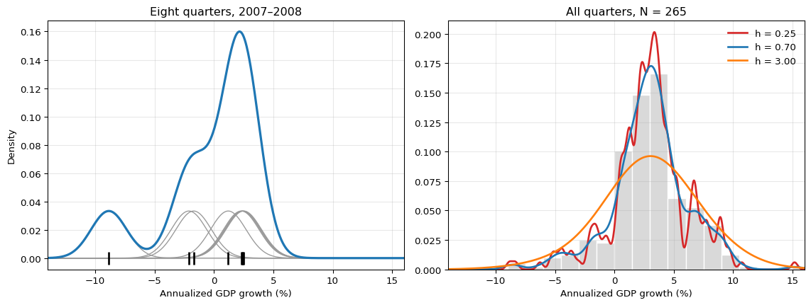
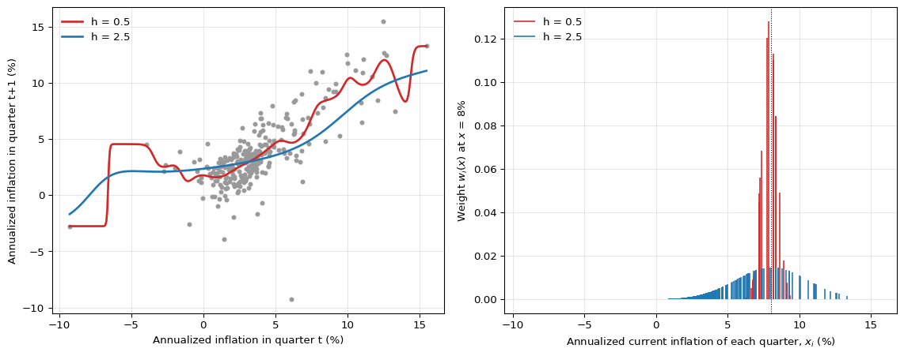

You have probably met a kernel already. The Newey–West heteroskedasticity- and autocorrelation-consistent (HAC) variance estimator weights the sample autocovariance at lag \ell by 1-\ell/(L+1) for \ell\le L and by zero beyond L(Newey and West 1987). The weights decline with distance, here distance in time, and one tuning constant, the truncation lag L, sets how far the averaging reaches. Kernel smoothing uses the same two ingredients, a weight that declines with distance and a constant that sets the reach, with distance measured in the value of an outcome or a predictor instead of in time.
From Histograms to Kernel Density Estimates
Let y_1,\ldots,y_N be observed values of a variable with density f. A histogram estimates f(y) by the fraction of observations in the fixed bin that contains y, divided by the bin width. The estimate is a step function whose shape depends on where the bin edges happen to lie, and it treats an observation just inside a bin edge exactly like one at the bin’s center.
A first improvement lets the bin move with the evaluation point: count the observations within distance h of y and divide by 2hN. This moving window no longer depends on bin edges, but an observation still counts fully when it is inside the window and not at all when it is outside. A kernel density estimator (Rosenblatt 1956; Parzen 1962) generalizes this window; a Gaussian kernel replaces the abrupt cutoff by a weight that declines smoothly with distance.
Definition: Kernel and Kernel Density Estimator
In this primer, a kernel is a function K:\mathbb{R}\to[0,\infty) that integrates to one and is symmetric, K(u)=K(-u). A common choice is the Gaussian kernel K(u)=(2\pi)^{-1/2}e^{-u^2/2}, the standard normal density. For a bandwidthh>0 write K_h(u)=K(u/h)/h. The kernel density estimator (KDE) is
\hat f_h(y)=\frac{1}{N}\sum_{i=1}^{N}K_h(y-y_i).
Each observation contributes one small bump, K_h(y-y_i)/N, centered at its own value, and the estimate is the sum of the bumps. With the Gaussian kernel, each bump is a normal density with mean y_i and standard deviation h, scaled by 1/N. Because every bump is nonnegative and integrates to 1/N, the estimate \hat f_h is itself a probability density. The factor 1/h preserves that area as the bump widens or narrows; a density height is not a point probability. The kernel fixes the shape of a bump and the bandwidth fixes its width, measured in the same units as y. The moving window above is the special case of the uniform kernel K(u)=\tfrac12\mathbf{1}\{|u|\le1\}, which has a flat top rather than a smooth decline.
import numpy as npimport pandas as pdimport matplotlib.pyplot as pltfrom scipy.stats import normraw = pd.read_csv("data/fred_qd_current.csv")fred_qd = raw.iloc[2:].copy()fred_qd["sasdate"] = pd.to_datetime(fred_qd["sasdate"])for col in fred_qd.columns:if col !="sasdate": fred_qd[col] = pd.to_numeric(fred_qd[col], errors="coerce")fred_qd = fred_qd.sort_values("sasdate").reset_index(drop=True)growth =400* np.log(fred_qd["GDPC1"]).diff()dates = fred_qd["sasdate"][growth.notna()]growth = growth.dropna().to_numpy()def kde(grid, data, h):"""Gaussian-kernel density estimate evaluated on a grid."""return norm.pdf((grid[:, None] - data[None, :]) / h).mean(axis=1) / hgrid = np.linspace(-14, 16, 800)fig, axes = plt.subplots(1, 2, figsize=(12, 4.6))# Left: the construction on eight quarterscrisis = growth[(dates >="2007-01-01") & (dates <="2008-12-31")]h_demo =1.5for value in crisis: axes[0].plot(grid, norm.pdf((grid - value) / h_demo) / (len(crisis) * h_demo), color="0.6", linewidth=1)axes[0].plot(grid, kde(grid, crisis, h_demo), color="C0", linewidth=2.4)axes[0].plot(crisis, np.zeros_like(crisis), "|", color="black", markersize=14, markeredgewidth=2)axes[0].set_title("Eight quarters, 2007–2008")axes[0].set_xlabel("Annualized GDP growth (%)")axes[0].set_ylabel("Density")# Right: normalize using the full sample, including observations outside xlim.bin_width =1.5bin_edges = np.arange( bin_width * np.floor(growth.min() / bin_width), bin_width * (np.ceil(growth.max() / bin_width) +1), bin_width,)axes[1].hist(growth, bins=bin_edges, density=True, color="0.85", edgecolor="white")for h, color in [(0.25, "C3"), (0.70, "C0"), (3.0, "C1")]: axes[1].plot(grid, kde(grid, growth, h), color=color, linewidth=2, label=f"h = {h:.2f}")axes[1].set_title(f"All quarters, N = {len(growth)}")axes[1].set_xlabel("Annualized GDP growth (%)")axes[1].legend(frameon=False)for ax in axes: ax.set_xlim(-14, 16) ax.grid(True, alpha=0.3)plt.tight_layout()plt.show()

Figure 1: Kernel density estimates of annualized quarterly U.S. real GDP growth (FRED series GDPC1, annualized log-difference, percent). Left: the eight quarters 2007Q1–2008Q4 (black ticks); each gray curve is one observation’s Gaussian bump K_h(y-y_i)/N with h=1.5, and the blue curve is their sum. Right: all quarters from 1959Q2 to 2025Q2, shown as a density-scaled histogram (gray bars, width 1.5) with Gaussian-kernel estimates for h=0.25 (red), h=0.70 (blue), and h=3 (orange). The two pandemic quarters, -32.8 and +29.9, lie outside the plotted range.
In the left panel, four of the eight quarters grew at between 2.3 and 2.5 percent, so their bumps pile up into the main peak. The two mild contractions near -2 percent form a shoulder, and the 2008Q4 contraction of -8.9 percent gets a small mode of its own.
The Bandwidth
The right panel of Figure 1 shows that the bandwidth, far more than the choice of kernel, decides what the estimate says. With h=0.25 the curve follows individual quarters and shows many small modes that a second sample of U.S. history would not reproduce. With h=3 it is close to one wide bell curve and flattens the peak near three percent. The middle bandwidth keeps the peak and the long left tail while smoothing away most of the small modes.
The bandwidth creates a bias–variance trade-off. A small bandwidth gives appreciable weight to few observations at each point, so the estimate is noisy: high variance. A large bandwidth averages over a wide range of values and blurs genuine features such as peaks: high bias. For a Gaussian kernel, independent and identically distributed (i.i.d.) observations, and a fixed interior point where the density is twice continuously differentiable, the bias is O(h^2) and the variance is O(1/(Nh)) as h\to0(Silverman 1986). Thus reducing both requires h\to0 while Nh\to\infty as the sample grows: narrower neighborhoods must still contain enough observations.
The bandwidth is therefore a tuning constant. In practice it is chosen by a rule of thumb, such as h=0.9\,\min(\hat\sigma,\widehat{\mathrm{IQR}}/1.34)\,N^{-1/5} for the Gaussian kernel, where \hat\sigma is the sample standard deviation and \widehat{\mathrm{IQR}} the interquartile range, or by cross-validation (Silverman 1986). For the GDP data the rule of thumb gives the middle curve, h\approx0.70 percentage points. The i.i.d. calculation is a reference case: the GDP plot describes the pooled historical sample, whose observations can be dependent and come from different regimes. Its rule-of-thumb bandwidth is illustrative, not a claim that it is optimal for this time series.
Question for Reflection
With a Gaussian kernel and the sample held fixed, what does the kernel density estimate look like in the two extreme cases h\to0 and h\to\infty? Does it still integrate to one for each finite h>0?
Suggested Answer
As h\to0, the bumps concentrate at the observations. The limiting distribution is the empirical distribution, with mass 1/N at each observation (combined for ties), rather than an ordinary density function. As h\to\infty, the density tends to zero on any fixed bounded range because its mass spreads ever farther out. For every finite h>0, the KDE still integrates to one over the whole real line; the zero pointwise limit is not a probability density. Useful bandwidths lie between these extremes.
Kernel Regression: A Weighted Average of Nearby Outcomes
The same idea estimates a conditional mean. Let (x_1,y_1),\ldots,(x_N,y_N) be observed pairs of a predictor and an outcome, and let m(x)=\mathbb{E}[Y\mid X=x]. The Nadaraya–Watson estimator(Nadaraya 1964; Watson 1964) predicts at x by a weighted average of the observed outcomes,
The denominator must be positive. A Gaussian kernel guarantees this for a nonempty sample; a compact-support kernel such as the uniform kernel gives an undefined estimate if no observation is within its window. The common factor 1/h cancels from numerator and denominator, which is why the code below uses K((x-x_i)/h) directly.
Observation i gets a large weight when its predictor value x_i is close to x, and the bandwidth decides how quickly the weight falls off with distance. The weights are nonnegative and, because of the denominator, sum to one, so \hat m_h(x) is an ordinary weighted mean. Unlike a KDE, which estimates how common a value of Y is, kernel regression estimates the average outcome among observations with similar X. Two consequences follow directly. The estimate solves a weighted least-squares problem with only an intercept,
and it always lies between the smallest and the largest observed outcome, whatever the bandwidth.
Figure 2 applies the estimator to inflation persistence in FRED-QD: the outcome is annualized consumer price index (CPI) inflation in quarter t+1, and the predictor is the same inflation rate in quarter t. The curves use the full final-vintage sample to illustrate smoothing; they are not out-of-sample forecasts. Forecast evaluation would require training only on information available at each origin, including publication lags and data revisions.
Show the code
import numpy as npimport pandas as pdimport matplotlib.pyplot as pltfrom scipy.stats import normraw = pd.read_csv("data/fred_qd_current.csv")fred_qd = raw.iloc[2:].copy()fred_qd["sasdate"] = pd.to_datetime(fred_qd["sasdate"])for col in fred_qd.columns:if col !="sasdate": fred_qd[col] = pd.to_numeric(fred_qd[col], errors="coerce")fred_qd = fred_qd.sort_values("sasdate").reset_index(drop=True)inflation =400* np.log(fred_qd["CPIAUCSL"]).diff()# Row t pairs inflation in quarter t (predictor) with quarter t+1 (outcome).pairs = pd.DataFrame({"x": inflation, "y": inflation.shift(-1)}).dropna()x, y = pairs["x"].to_numpy(), pairs["y"].to_numpy()def kernel_weights(x0, h): w = norm.pdf((x - x0) / h)return w / w.sum()x_grid = np.linspace(x.min(), x.max(), 400)fig, axes = plt.subplots(1, 2, figsize=(12, 4.8))axes[0].scatter(x, y, s=12, color="0.6")for h, color in [(0.5, "C3"), (2.5, "C0")]: fit = [kernel_weights(v, h) @ y for v in x_grid] axes[0].plot(x_grid, fit, color=color, linewidth=2, label=f"h = {h}")axes[0].set_xlabel("Annualized inflation in quarter t (%)")axes[0].set_ylabel("Annualized inflation in quarter t+1 (%)")axes[0].legend(frameon=False, loc="upper left")x0 =8.0for h, color, offset in [(0.5, "C3", -0.08), (2.5, "C0", 0.08)]: axes[1].vlines(x + offset, 0, kernel_weights(x0, h), color=color, linewidth=1.2, label=f"h = {h}")axes[1].axvline(x0, color="black", linewidth=0.8, linestyle=":")axes[1].set_xlabel("Annualized current inflation of each quarter, $x_i$ (%)")axes[1].set_ylabel("Weight $w_i(x)$ at $x$ = 8%")axes[1].legend(frameon=False, loc="upper left")for ax in axes: ax.grid(True, alpha=0.3)plt.tight_layout()plt.show()

Figure 2: Nadaraya–Watson regression of next-quarter inflation on current inflation (annualized log-difference of CPIAUCSL, percent; FRED-QD, forecast origins 1959Q2–2025Q2), with a Gaussian kernel. Left: observed pairs (gray points) and full-sample fits with h=0.5 (red) and h=2.5 (blue). Right: the weights w_i(x) that the two bandwidths give each quarter when predicting at current inflation x=8 percent (dotted line), plotted against that quarter’s current inflation x_i; red and blue stems are offset horizontally by -0.08 and +0.08 percentage points for visibility.
The right panel shows what the estimator does at one point. With h=0.5, only the few quarters whose inflation was close to eight percent receive appreciable weight; Gaussian weights are positive even for distant observations, but can be negligible. With h=2.5, the weight is spread over many more quarters. The left panel shows the consequence for the fitted curve. The small bandwidth chases individual quarters, especially where observations are sparse, below zero and above ten percent. The large bandwidth gives a smooth curve that follows the persistence in the data, but at high inflation it sits below most of the points, because many of the quarters it averages had lower inflation. The same qualitative bias–variance trade-off appears as in density estimation.
Question for Reflection
For a Gaussian kernel and a fixed sample, what happens to the regression weights and prediction as h\to\infty?
Suggested Answer
All standardized distances (x-x_i)/h approach zero, so the kernel values become equal and w_i(x)\to1/N. The prediction therefore approaches the overall sample mean \bar y at every fixed x: very wide smoothing removes the dependence on the predictor.
More than one predictor. A common construction multiplies one kernel per predictor, using a suitable bandwidth for each predictor’s units. An observation then receives a large weight only if it is close to x in every predictor at once. As predictors are added, fewer observations are close in all of them, and a kernel estimator with fixed bandwidths can give appreciable weight to very few observations. This curse of dimensionality is why plain kernel regression is rarely used with more than a handful of predictors.
Summary
Key Takeaways
A kernel density estimate is a sum of one bump per observation; the kernel fixes the bump’s shape and the bandwidth its width.
Kernel regression predicts by a weighted average of observed outcomes, with nonnegative weights that sum to one.
The bandwidth trades variance (too small) against bias (too large) and is a tuning constant chosen from the data.
References
Nadaraya, E. A. 1964. “On Estimating Regression.”Theory of Probability and Its Applications 9 (1): 141–42. https://doi.org/10.1137/1109020.
Newey, Whitney K., and Kenneth D. West. 1987. “A Simple, Positive Semi-Definite, Heteroskedasticity and Autocorrelation Consistent Covariance Matrix.”Econometrica 55 (3): 703–8. https://doi.org/10.2307/1913610.
Parzen, Emanuel. 1962. “On Estimation of a Probability Density Function and Mode.”The Annals of Mathematical Statistics 33 (3): 1065–76. https://doi.org/10.1214/aoms/1177704472.
Rosenblatt, Murray. 1956. “Remarks on Some Nonparametric Estimates of a Density Function.”The Annals of Mathematical Statistics 27 (3): 832–37. https://doi.org/10.1214/aoms/1177728190.
Silverman, Bernard W. 1986. Density Estimation for Statistics and Data Analysis. London: Chapman; Hall.
Watson, Geoffrey S. 1964. “Smooth Regression Analysis.”Sankhyā: The Indian Journal of Statistics, Series A 26 (4): 359–72.